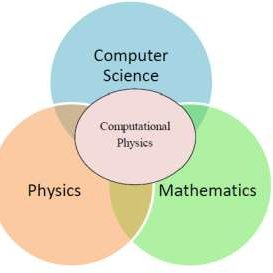

\(\displaystyle -14.6250000000000\)
Symbolic Computation in Theoretical Physics with Python
Physics
Computational Physics
Using SageMath and Open-Source Tools.

Introduction
Symbolic computation simplifies complex equations and models physical systems. Python and open-source tools like SageMath make it easier to solve problems in quantum field theory, general relativity, and more.
Main libraries
- SageMath A comprehensive system for algebra, calculus, and numerical analysis. It’s widely used for symbolic computation in physics.
- Cadabra A tool for tensor calculations, especially in general relativity. It simplifies complex tensor equations.
- EinsteinPy A Python library for general relativity, with tools to work with Einstein’s equations and relativistic phenomena.
Other libraries
- PyFeyn
- A Python library for generating and visualizing Feynman diagrams, used in quantum field theory.
- PyRate
- A Python library for lattice field theory and high-energy physics calculations.
- munuSSM
- A tool for symbolic matrix manipulations in string theory and quantum gravity.
- Wilson
- A framework for effective field theory calculations in lattice gauge theory.
- Flavio
- A Python library focused on flavor physics, studying mesons and baryons.
SageMath
SageMath (Stein et al. (2024)) is an open-source system that combines many powerful mathematical software packages into one interface. It provides tools for symbolic computation, numerical analysis, plotting, and more, making it highly useful for both research and education in mathematics, physics, and engineering.
Basics
Fundamental operations, symbolic computation, and core mathematical structures.
Arithmetic operations
It supports basic arithmetic operations:
Symbolic expressions
It supports symbolic expressions:
Calculus
SageMath provides tools for symbolic calculus such as differentiation and integration. You can compute derivatives and integrals of functions symbolically:
\(\displaystyle \frac{1}{3} \, x^{3} + \frac{3}{2} \, x^{2} + 2 \, x\)
Differential equations
SageMath can solve differential equations symbolically:
\(\displaystyle y\left(x\right) + \frac{\partial}{\partial x}y\left(x\right) = \sin\left(x\right)\)
Linear algebra
SageMath handles matrix operations, such as addition, multiplication, and finding eigenvalues:
\(\displaystyle \left(\begin{array}{rr}
1 & 2 \\
3 & 4 \\
5 & 6
\end{array}\right)\)
\(\displaystyle \left(\begin{array}{rrr}
7 & 8 & 9 \\
9 & 10 & 11
\end{array}\right)\)
\(\displaystyle \left(\begin{array}{rrr}
25 & 28 & 31 \\
57 & 64 & 71 \\
89 & 100 & 111
\end{array}\right)\)
\(\displaystyle \left(\begin{array}{rr}
1 & 0 \\
0 & 2
\end{array}\right)\)
\(\displaystyle \left[\left(2, \left[\left(0,\,1\right)\right], 1\right), \left(1, \left[\left(1,\,0\right)\right], 1\right)\right]\)
# Validation of eigenvalue equation
for eigenvalue, (eigenvector, *_), _ in C.eigenvectors_right():
display((C, eigenvector, eigenvalue, C * eigenvector == eigenvalue * eigenvector))
\(\displaystyle \left(\left(\begin{array}{rr}
1 & 0 \\
0 & 2
\end{array}\right), \left(0,\,1\right), 2, \mathrm{True}\right)\)
\(\displaystyle \left(\left(\begin{array}{rr}
1 & 0 \\
0 & 2
\end{array}\right), \left(1,\,0\right), 1, \mathrm{True}\right)\)
Group theory
SageMath includes tools for working with groups:
\(\displaystyle \langle (1,2,3), (1,2) \rangle\)
\(\displaystyle \left[1, (1,3,2), (1,2,3), (2,3), (1,3), (1,2)\right]\)
\(\displaystyle \left[\left(\begin{array}{rrr}
1 & 0 & 0 \\
0 & 1 & 0 \\
0 & 0 & 1
\end{array}\right), \left(\begin{array}{rrr}
0 & 0 & 1 \\
1 & 0 & 0 \\
0 & 1 & 0
\end{array}\right), \left(\begin{array}{rrr}
0 & 1 & 0 \\
0 & 0 & 1 \\
1 & 0 & 0
\end{array}\right), \left(\begin{array}{rrr}
1 & 0 & 0 \\
0 & 0 & 1 \\
0 & 1 & 0
\end{array}\right), \left(\begin{array}{rrr}
0 & 0 & 1 \\
0 & 1 & 0 \\
1 & 0 & 0
\end{array}\right), \left(\begin{array}{rrr}
0 & 1 & 0 \\
1 & 0 & 0 \\
0 & 0 & 1
\end{array}\right)\right]\)
Differentiable manifolds
SageMath allows for computations in differential geometry, including tangent vectors, differential forms, and more:
References
Stein, William, David Joyner, David Kohel, John Cremona, and Burçin Eröcal. 2024. “SageMath, Version 10.5.” http://www.sagemath.org.